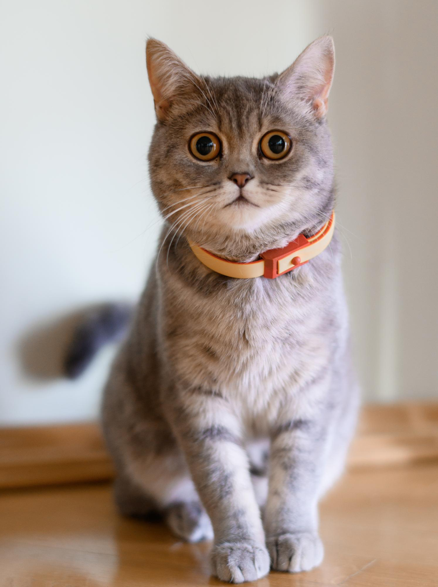
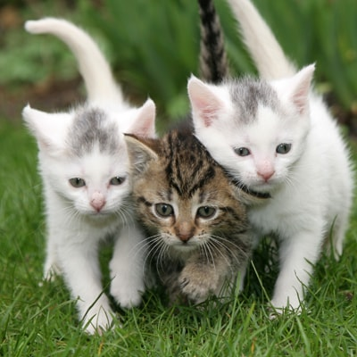
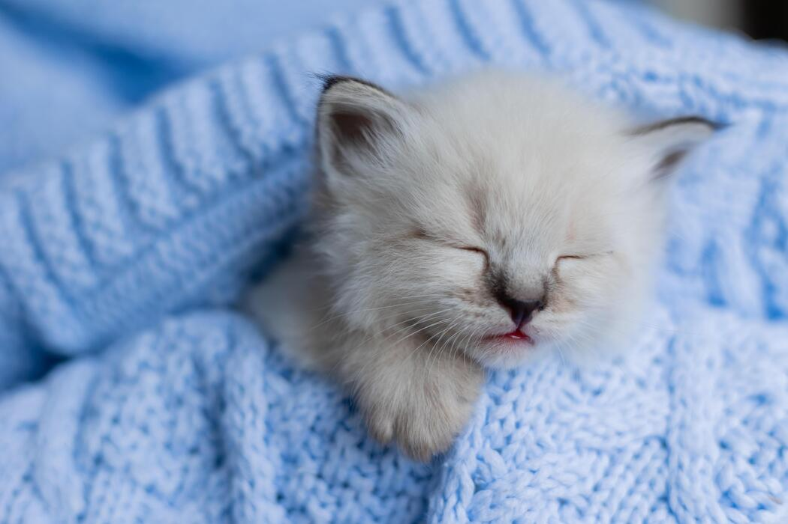
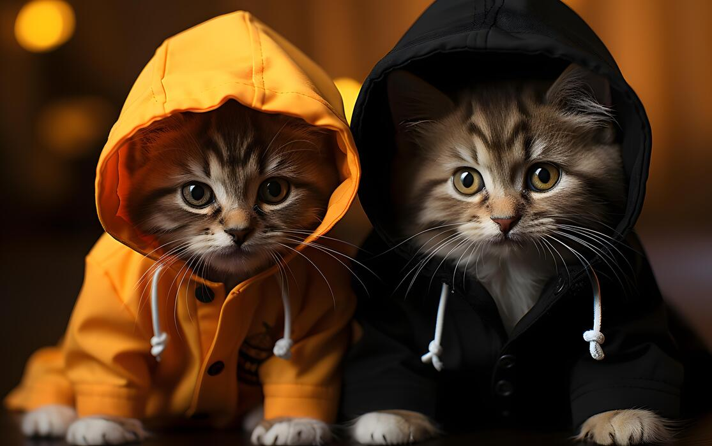
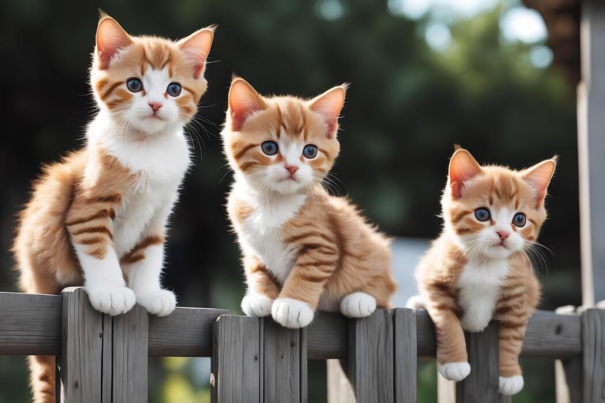

Cat Photo App
Welcome to the Cat Photo App! It's a simple app for viewing beautiful cat photos. A cat is a small, furry, domesticated carnivorous mammal known for its agility, independence, and affectionate companionship with humans.






